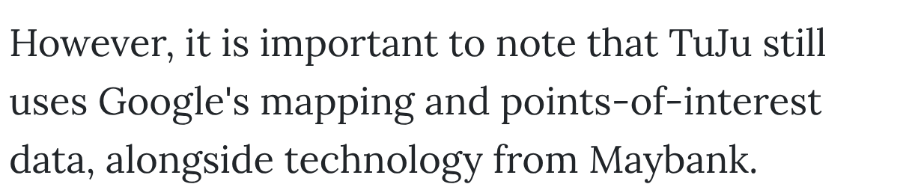
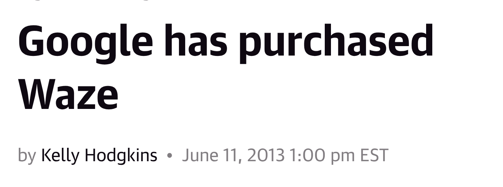

WAZE OUT. TUJU IN.
TuJu, the Waze replacement, rated by Malaysians.
1.2Google Play
4.92K reviews
1.3App Store
1.9K ratings
REVIEW 1 · APP STORE · 1 STAR
A navigation app where search doesn't work.
APP STORE
"…the search function—arguably the most fundamental feature—doesn't work at all."
Search came up in 195 of the latest 500 App Store reviews, more than any other complaint. Type a place, get "No results found."
REVIEW 2 · GOOGLE PLAY · 1 STAR
Even its best feature, the highway CCTV.
GOOGLE PLAY
Live CCTV is what TuJu does that Waze doesn't. This review is from September, before the rush, and 640 people marked it helpful.
REVIEW 3 · APP STORE · 1 STAR
So fed up, they let AI write the review.
Read the first line again.
"Here's a sharp, critical statement that expresses your frustration…" That reads like a chatbot's reply, pasted straight in. Even the review was outsourced.
THE PART NOBODY'S TALKING ABOUT
TuJu runs on Google's maps. Google owns Waze.

SINAR DAILY · 21 OCT 2026
ENGADGET · 2013To be fair: the ban was about Waze's company being under Israeli law, not about Google. But it shows how hard it is to leave Big Tech by switching apps. The map underneath is still Google's.
Would you switch if it worked?